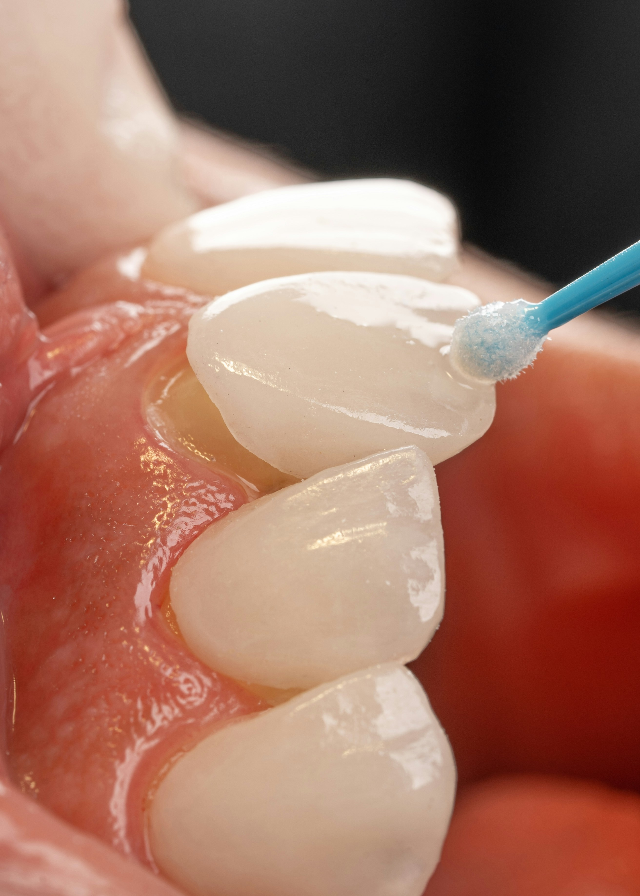
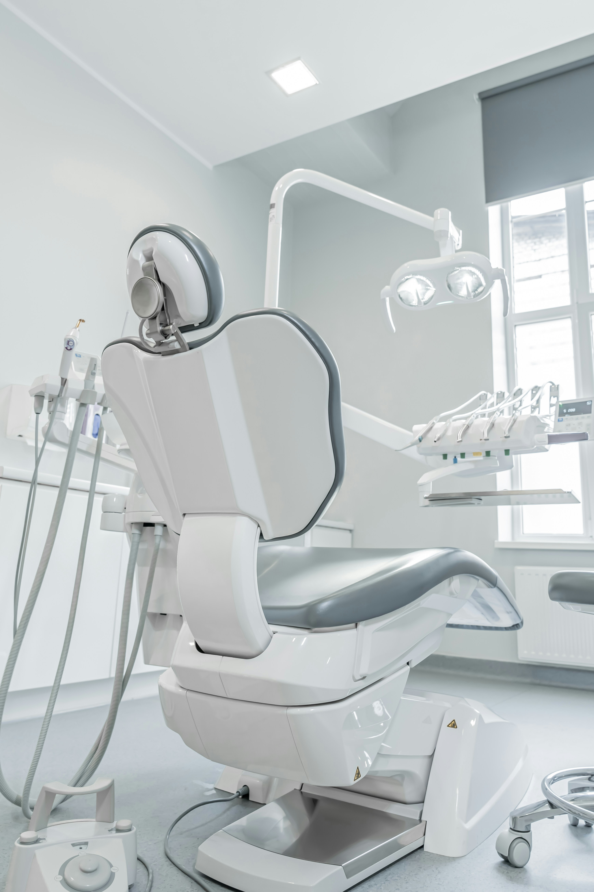
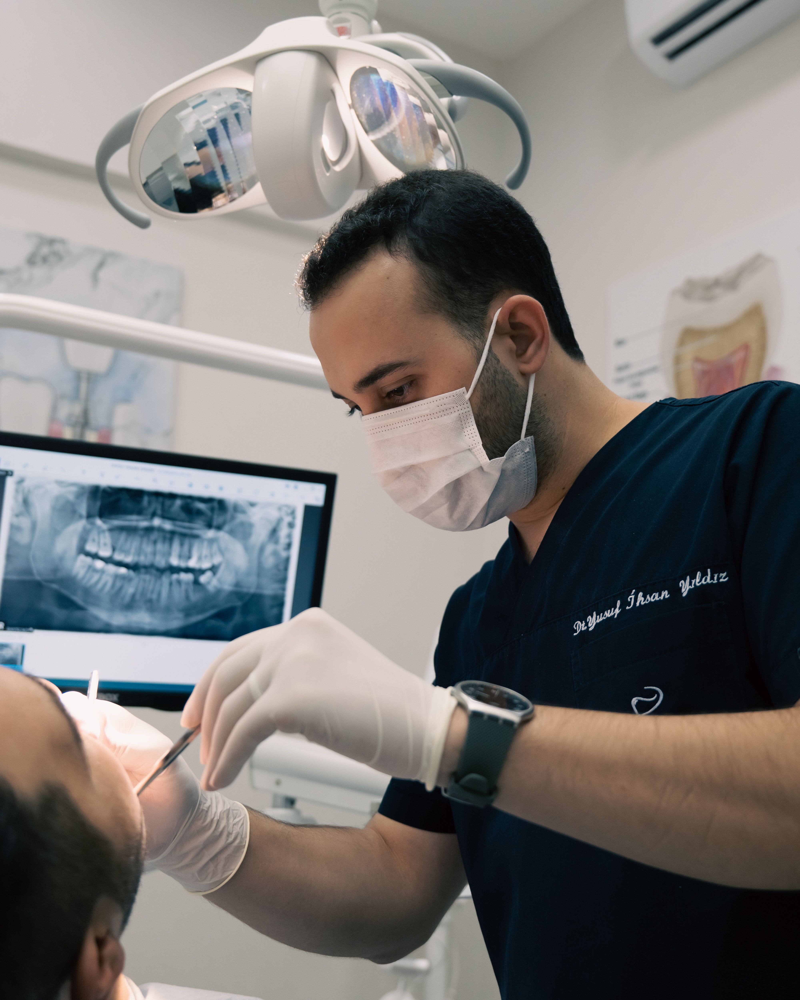
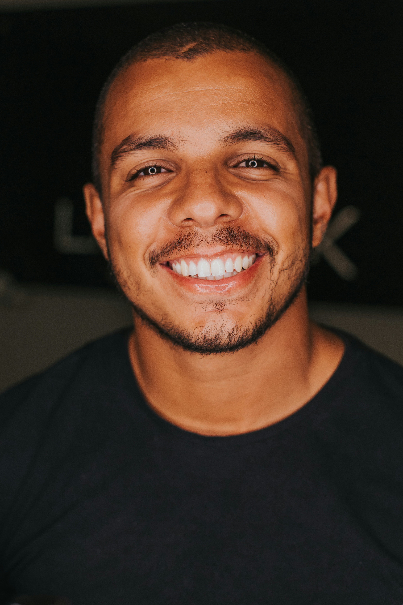
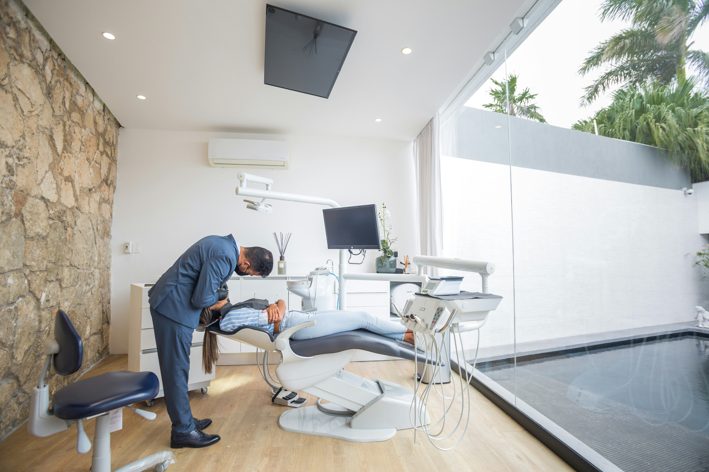
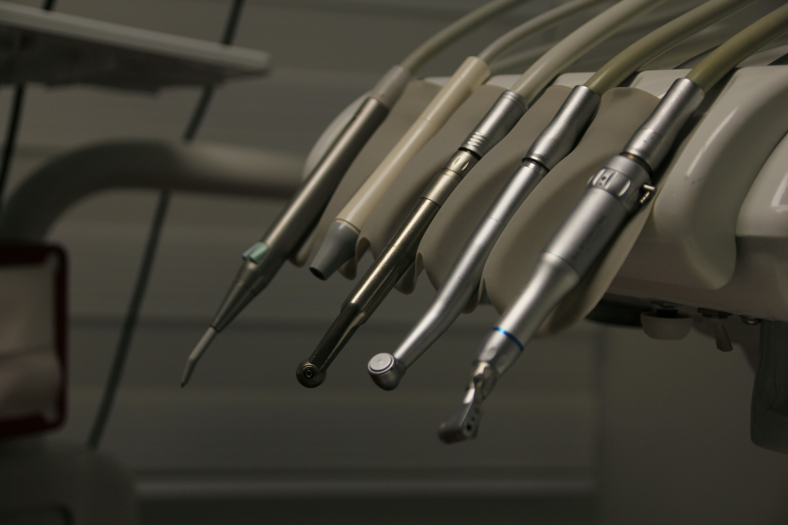
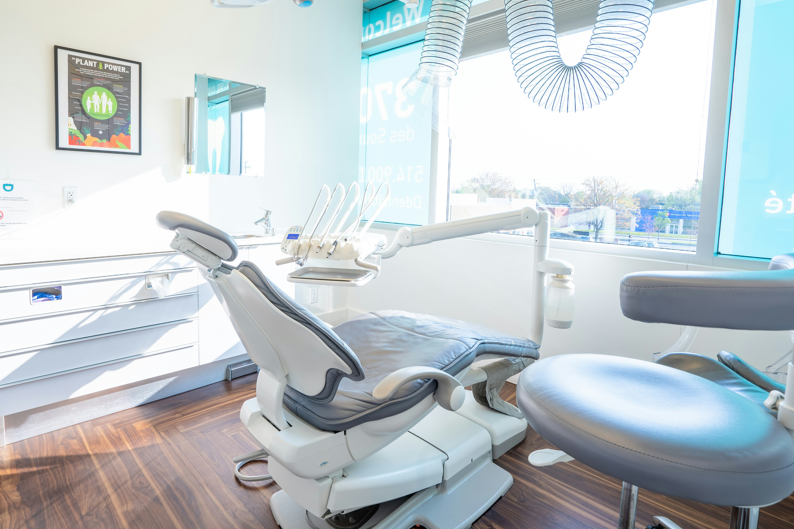

EstéticaDental
Nuestras soluciones:
Carillas, diseño de sonrisa y armonización del gesto, planificados digitalmente antes de tocar un solo diente.
Ver más +Nos encontrás en:
Combinamos ciencia avanzada
con la mirada de un artista.

Cada tratamiento en Alata comienza con un diagnóstico digital completo: escaneo intraoral 3D, tomografía de baja radiación y diseño de sonrisa asistido por software. La tecnología nos da exactitud; nuestro equipo le da calidez.


Nuestras soluciones:
Carillas, diseño de sonrisa y armonización del gesto, planificados digitalmente antes de tocar un solo diente.
Ver más +
Nuestras soluciones:
Rehabilitación fija y permanente con cirugía guiada por computadora y carga inmediata cuando el caso lo permite.
Ver más +

Nuestras soluciones:
Alineadores transparentes hechos a medida, con simulación del resultado final antes de empezar.
Ver más +¿Por qué
elegirnos?
El espacio

Testimonios
No. La primera consulta de diagnóstico es sin cargo e incluye una evaluación clínica completa y un plan de tratamiento por escrito.
Trabajamos con las principales prepagas por sistema de reintegro y ofrecemos planes de financiación propios en cuotas sin interés.
Depende del caso: la mayoría se resuelve entre 8 y 18 meses. En tu primera visita simulamos digitalmente el resultado y te damos un plazo estimado real.
La cirugía se realiza con anestesia local y, si lo preferís, sedación consciente. La gran mayoría de nuestros pacientes retoma su rutina al día siguiente.
Sí, reservamos espacios diarios para urgencias de pacientes y no pacientes. Llamanos y te coordinamos la atención en el día.